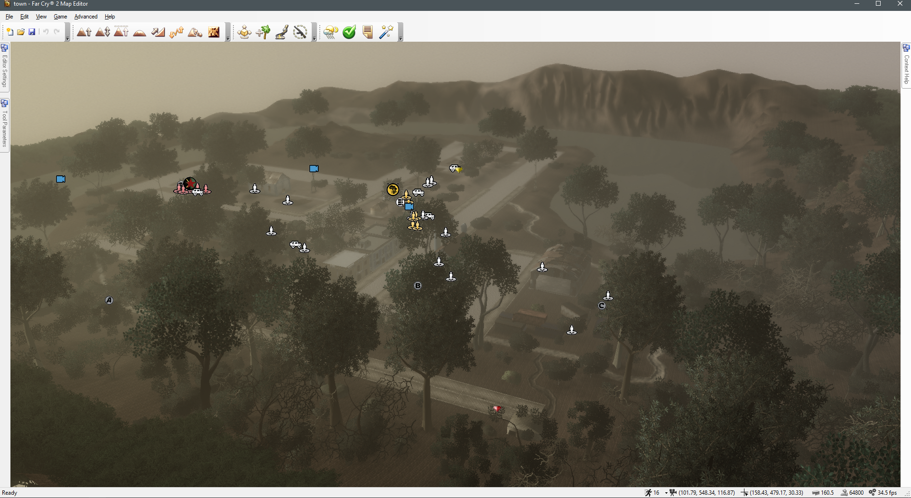
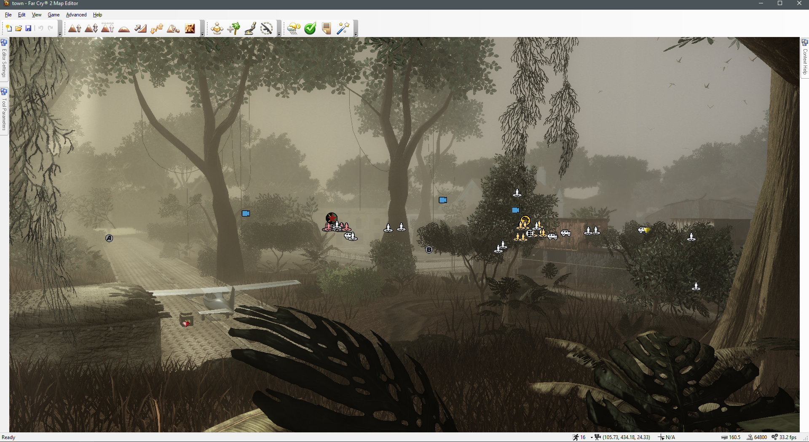
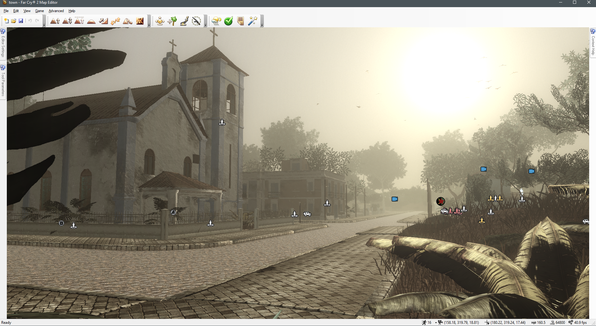
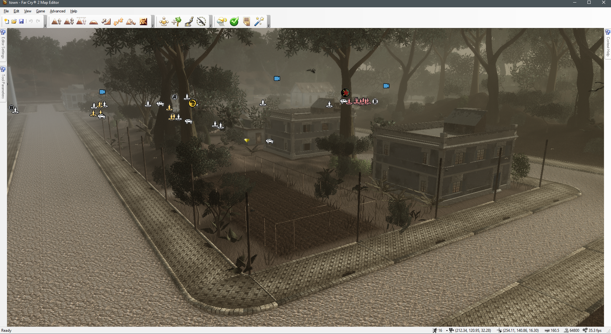

Town
Map Name: Town
Players: 2-16
Size: Large
Environment: Jungle
Large town situated deep within the jungle. Features detailed map and alternate pathways.Suitable for all gamemodes.
Screenshots



